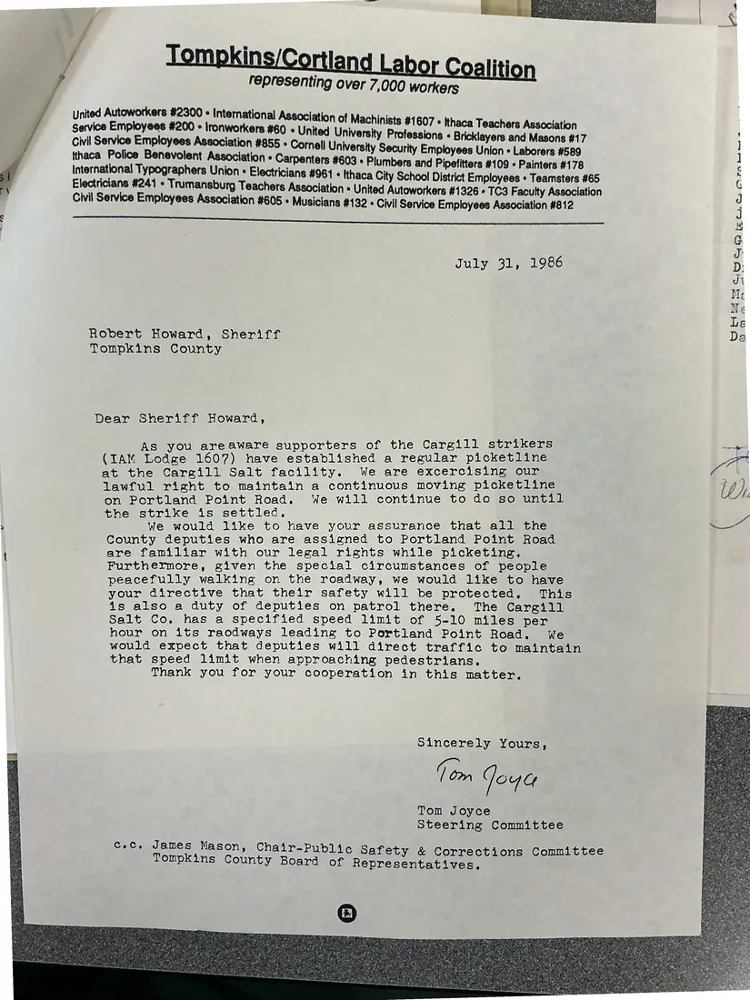

Letter, 1 page
Tom Joyce to Sheriff Robert Howard on the Cargill picket line
July 31, 1986
On behalf of the Steering Committee, Tom Joyce asks the Tompkins County sheriff to make sure deputies at the Cargill salt facility know picketers' legal rights and keep them safe on Portland Point Road, including enforcing the 5–10 mph speed limit for trucks.
Download or cite this itemPages


(open zoom view)Read the page text (machine-read, mostly readable)
This text was generated automatically from the photograph and has not been corrected. The image is the authoritative record.
Tompkins/Cortland Labor Coalition resenting over 7,000 workers Service Employees #200 » Ironworkers #60 « United Univers nists #1607 « Ithaca Teachers Association Civil Service Employees Association #855 + Cornell iia Sean one tbe SAC UL Assoc! ity Employees Union + Laborers #589 Monat oe Tear ees RECS * Plumbers and Pipefitters #109 « Painters #178 Electricians #241 * Trumansburg Teachers Association « ca City School District Employees « Teamsters #65 y United Autoworkers #1326 » TC3 Faculty Association Civil Service Employees Association #605 + Musicians #132 « Civil Service Employees hiecdiich #812 a ee i July 31, 1986 Robert Howard, Sheriff Tompkins County Dear Sheriff Howard, As you areaware supporters of the Cargill strikers (IAM Lodge 1607) have established a regular picketline at the Cargill Salt facility. We are excercising our lawful right to maintain a continuous moving picketline on Portland Point Road. We will continue to do so until the strike is settled, We would like to have your assurance that all the County deputies who are assigned to Portland Point Road are familiar with our legal rights while picketing. Furthermore, given the special circumstances of people peacefully walking on the roadway, we would like to have your directive that their safety will be protected. This is also a duty of deputies on patrol there. The Cargill Salt Co. has a specified speed limit of 5-10 miles per hour on its raodways leading to Portland Point Road. We would expect that deputies will direct traffic to maintain that speed limit when approaching pedestrians. Thank you for your cooperation in this matter. Sincerely Yours, Com Joga Tom Joyce Steering Committee Cec, James Mason, Chair-Public Safe Tompkins County Boa ty & Corrections Committee (GR. Grate - moe OH re mom
See something wrong, or recognize a person or event? Send a correction. If you hold rights in this item or think it should not be public, write to the same address.